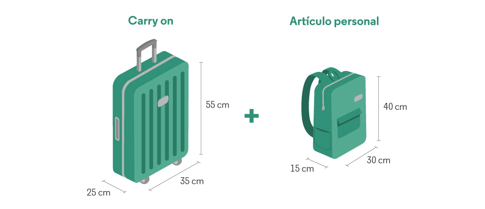
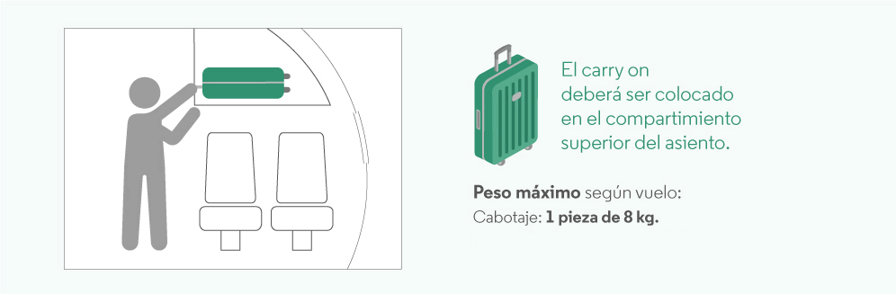
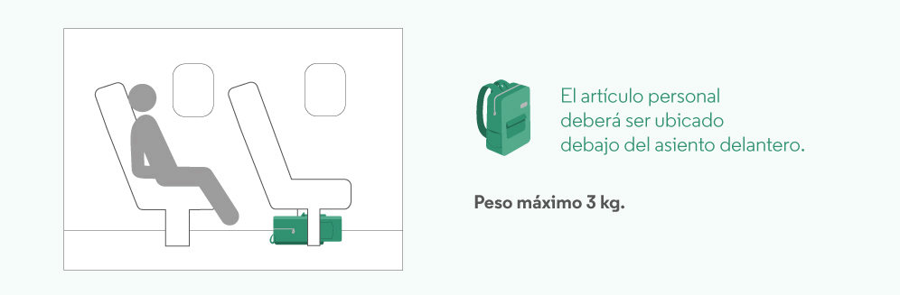

Preguntas Frecuentes
Te recomendamos identificar con tus datos personales, el equipaje de mano y el despachado en bodega.
Equipaje de mano
El equipaje de mano se podrá transportar a bordo, sujeto a la disponibilidad de la cabina. En caso de no poder ser transportado en la misma por temas operativos, se enviará a bodega sin cargo, incluso si cumple las medidas de tamaño y peso.
Por el contrario, si tu equipaje de mano no cumple con la cantidad, el tamaño y peso máximo permitido, tendrás la opción de enviarlo a la bodega del avión con un costo extra. Si decidís no hacerlo, no podremos embarcar tu equipaje en el vuelo.
Como recomendación te sugerimos que tengas en cuenta mantener con vos cualquier documentación, medicación y artículos frágiles o valiosos.
En cuanto al equipaje de mano
Podrás llevar en la cabina un carry on y un artículo personal sin costo, siempre que tu tarifa lo incluya y recordando que deben cumplir con las características, tamaño y peso permitidos, por tu seguridad y confort a bordo.
Las medidas máximas son 55 x 35 x 25 cm (alto, largo y ancho), incluyendo los bolsillos, las ruedas y el asa.
El carry on debe caber en el medidor de equipaje del aeropuerto, todo equipaje que exceda el tamaño permitido por dichos medidores deberá ser despachado en la bodega del avión, sujeto a cargos.
Artículo personal
Las medidas máximas son 40 x 30 x 15 cm (alto, largo y ancho) y hasta 3 kg.
Puede ser una mochila, cartera, un bolso para laptop o un bolso para bebé.
En primera fila o salida de emergencia, el artículo personal deberá ir en el compartimiento superior del asiento.
Artículos que podés llevar:
Una prenda de abrigo.
Un paraguas.
Una cámara fotográfica pequeña.
Un bastón.
Infantes
Sin derecho a franquicia. Solo podrán transportar, sin cargo, en bodega, un cochecito/ andador, silla de paseo plegable.
Menores
Tienen derecho a la misma franquicia de equipaje que el pasajero adulto.
Equipaje en Bodega
El equipaje registrado en bodega debe contener SOLO elementos de uso personal (como ropa, calzado, elementos de higiene personal). SOLAMENTE se considera como equipaje registrado: una valija, bolso o mochila.
No se considera como tal: cajas, bolsas o similares. Los equipos deportivos, bicicletas, transporte de mascotas en bodega o en cabina, tienen un cargo extra. Ver más información ver en Equipaje o Mascotas.
Se deberá tener en cuenta que existen tarifas promocionales que no incluyen equipaje en bodega, teniendo en estos casos la opción de comprar anticipadamente el equipaje adicional hasta 3 hs antes de la salida del vuelo a través de la página web, contact center o sucursal. También lo podrá adquirir previo a la salida de su vuelo en el aeropuerto.
Cabotaje
Adultos
En caso de boletos emitidos bajo un mismo ticket, en combinación con un vuelo, se respetará la franquicia de éste último en toda la ruta.
| Origen / Destino | Promo | Base | Plus | Flex | Premium Economy |
|---|---|---|---|---|---|
| Buenos Aires | Cargo Extra | 1 pieza de 15 kg | 1 pieza de 15 kg | 1 piezas de 15 kg c/u | 2 piezas de 15 kg c/u |
| Catamarca | Cargo Extra | 1 pieza de 15 kg | 1 pieza de 15 kg | 1 piezas de 15 kg c/u | 2 piezas de 15 kg c/u |
| Córdoba | Cargo Extra | 1 pieza de 15 kg | 1 pieza de 15 kg | 1 piezas de 15 kg c/u | 2 piezas de 15 kg c/u |
| Santa Fe | Cargo Extra | 1 pieza de 15 kg | 1 pieza de 15 kg | 1 piezas de 15 kg c/u | 2 piezas de 15 kg c/u |
| Tucuman | Cargo Extra | 1 pieza de 15 kg | 1 pieza de 15 kg | 1 piezas de 15 kg c/u | 2 piezas de 15 kg c/u |
| Jujuy | Cargo Extra | 1 pieza de 15 kg | 1 pieza de 15 kg | 1 piezas de 15 kg c/u | 2 piezas de 15 kg c/u |
| La Rioja | Cargo Extra | 1 pieza de 15 kg | 1 pieza de 15 kg | 1 piezas de 15 kg c/u | 2 piezas de 15 kg c/u |
| Neuquén | Cargo Extra | 1 pieza de 15 kg | 1 pieza de 15 kg | 1 piezas de 15 kg c/u | 2 piezas de 15 kg c/u |
Aclaraciones
1. Medidas: La suma de las 3 dimensiones no deberá exceder los 158cm (suma de alto, largo y ancho).
2. Rutas de Cabotaje, si supera los 15kg se deberá cobrar Exceso en el Aeropuerto.
3. Rutas de Cabotaje si supera los 23kgs se deberá despachar por Cargas.
Infantes
Sin derecho a franquicia. Sólo podrán transportar sin cargo un cochecito/andador, silla de paseo plegable o asiento de coche, que podrá ser transportado en la bodega del avión, sujeto a disponibilidad de espacio.
Menores
Tienen derecho a la misma franquicia de equipaje que el pasajero adulto. Además podrán transportar sin cargo un cochecito/andador, silla de paseo plegable o asiento de coche, que podrá ser transportado en la bodega del avión, sujeto a disponibilidad de espacio.
Regionales
Adultos
En caso de boletos emitidos bajo un mismo ticket, en combinación con un vuelo de Cabotaje, se respetará la franquicia del vuelo Regional en toda la ruta.
Aclaraciones
1. Medidas: La suma de las 3 dimensiones no deberá exceder los 158cm (suma de alto, largo y ancho).
2. Equipaje en conexión entre vuelos Regionales y vuelos de cabotaje: El pasajero realizará migraciones. Retirará el equipaje para pasar por el control de aduana, y lo entregará nuevamente en los mostradores habilitados.
Infantes
Los infantes que no ocupen asiento, tendrán permitida una valija registrada (pieza) de 10 kilos de peso, cuyas dimensiones no excedan los 115cm. Además podrán transportar, sin cargo, en bodega, una silla/coche de paseo totalmente plegable o asiento de coche para infantes.
Menores
Tienen derecho a la misma franquicia de equipaje que el pasajero adulto. Además podrán transportar, sin cargo, en bodega, una silla/coche de paseo totalmente plegable o asiento de coche para infantes.